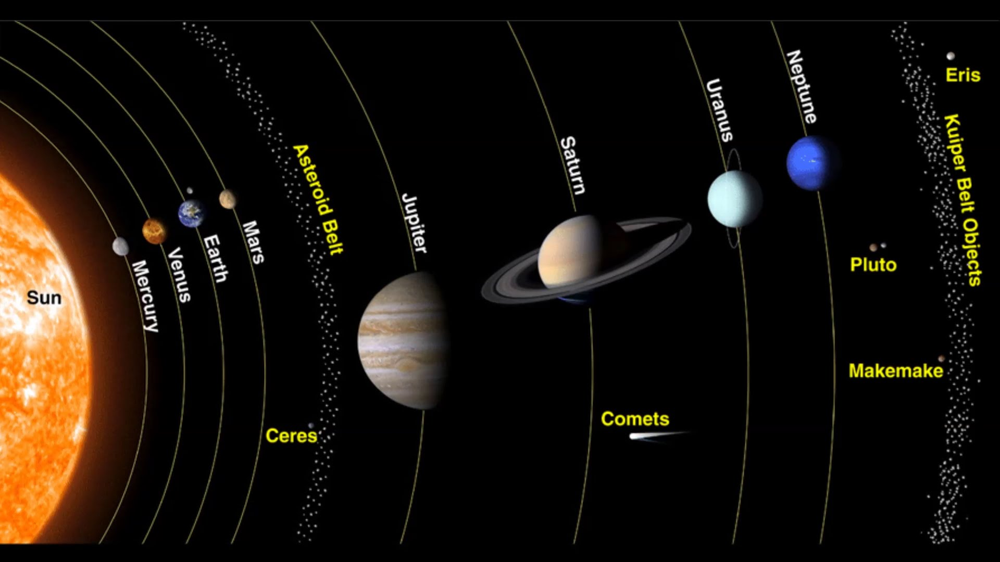
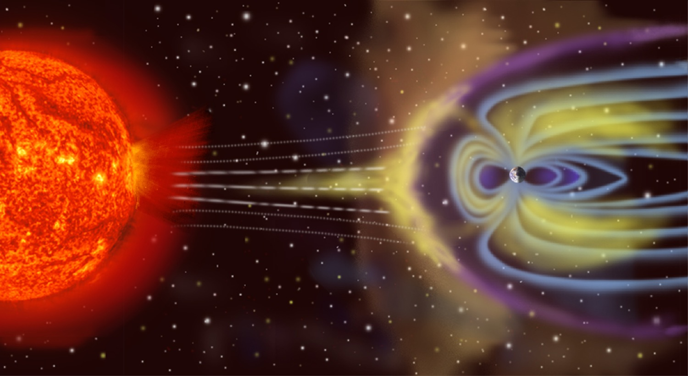
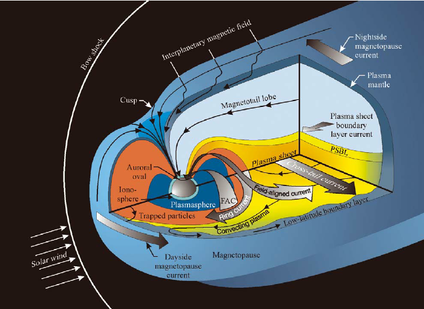
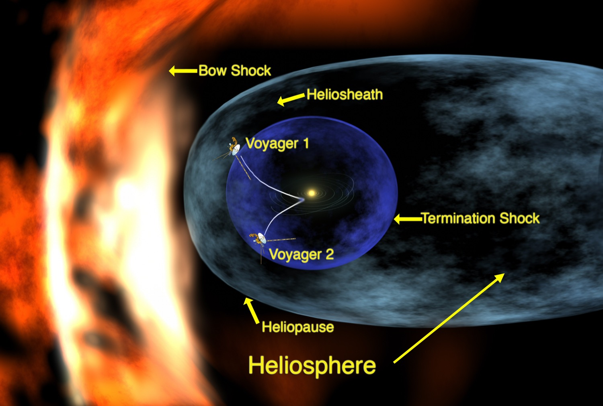
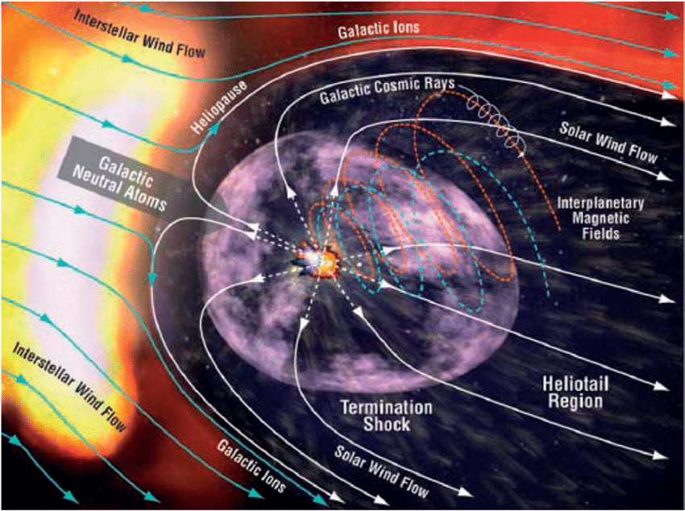

Essay
Space is Full!
Everything you've heard about space being empty is wrong.
A lot of people are taught that space is mostly empty. And for most of the history of astronomy, scientists thought that too.
Pdf of Version of this Content (with more pictures)
"To devote the greater part of one's adult life to the lonely recording of the terrible emptiness between the stars is more than can be asked of someone entirely normal. It is perhaps with some realization of this that the Spatio-analytic Institute has adopted as its official slogan the somewhat wry statement, 'We Analyze Nothing.'"-The Currents of Space, Issac Asimov (1952)
Many people picture our solar system like this:

Source: i.ytimg.com
But this is such a barren picture of our home! (No offense to planetary scientists.) While it is true that the density in space is quite low compared to on Earth, we have discovered that the solar system is in fact filled with dynamic processes!
In 1958, [Only 6 years after Asimov wrote The Currents of Space], Eugene Parker discovered that a stiff wind blows incessantly from the sun, filling local interstellar space with ionized gas. The discovery forever changed how scientists perceive space and helped explain many phenomena, from geomagnetic storms that knock out power grids on Earth to the formation of distant stars. [National Geographic]
We have discovered gigantic magnetic force fields, shielding the Earth and some other planets from the Sun's wind. An even bigger field, generated by the Sun, shields the entire solar system from the vast ocean of cold plasma that exists between the stars: the interstellar medium! I think it is important for people to discover that there is more than just "empty space" up there. Things are happening every day! We call all of these variable processes "Space Weather," and humanity is still in the process of understanding them well enough to make predictions that will keep our infrastructure safe, like we do for normal weather. That is what motivates me to be a scientist.
When I think of our solar system, this is what I see:
{kind=link}

Source: sci.esa.int
{kind=link}

Source: ResearchGate
{kind=link}

Source: sunearthday.nasa.gov
{kind=link}

Source: science.gsfc.nasa.gov